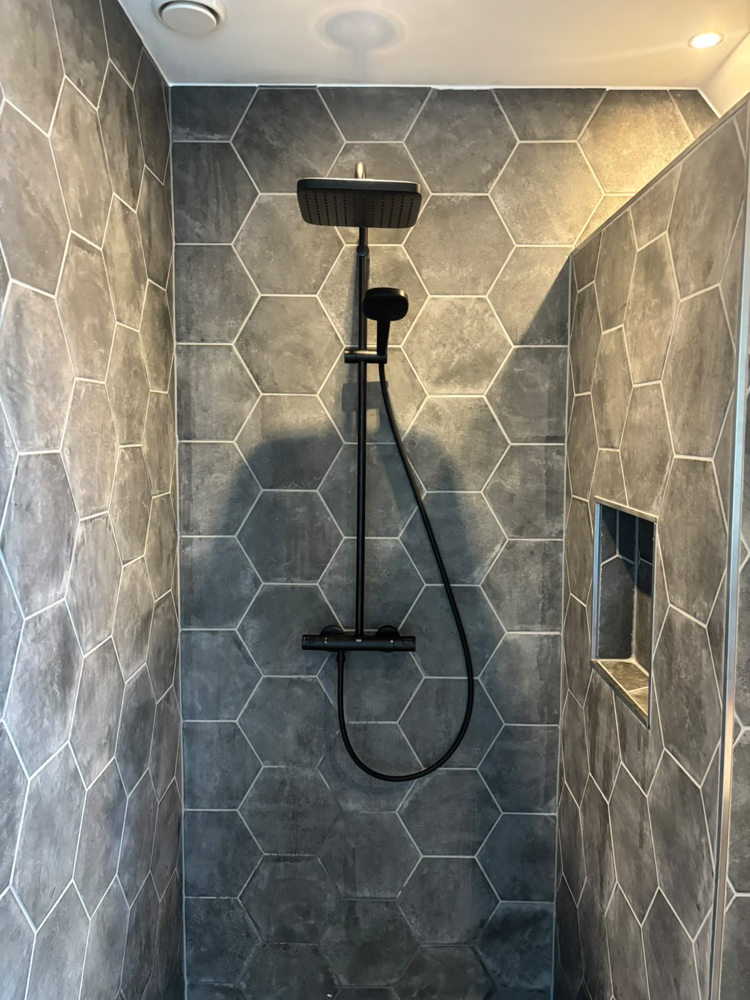
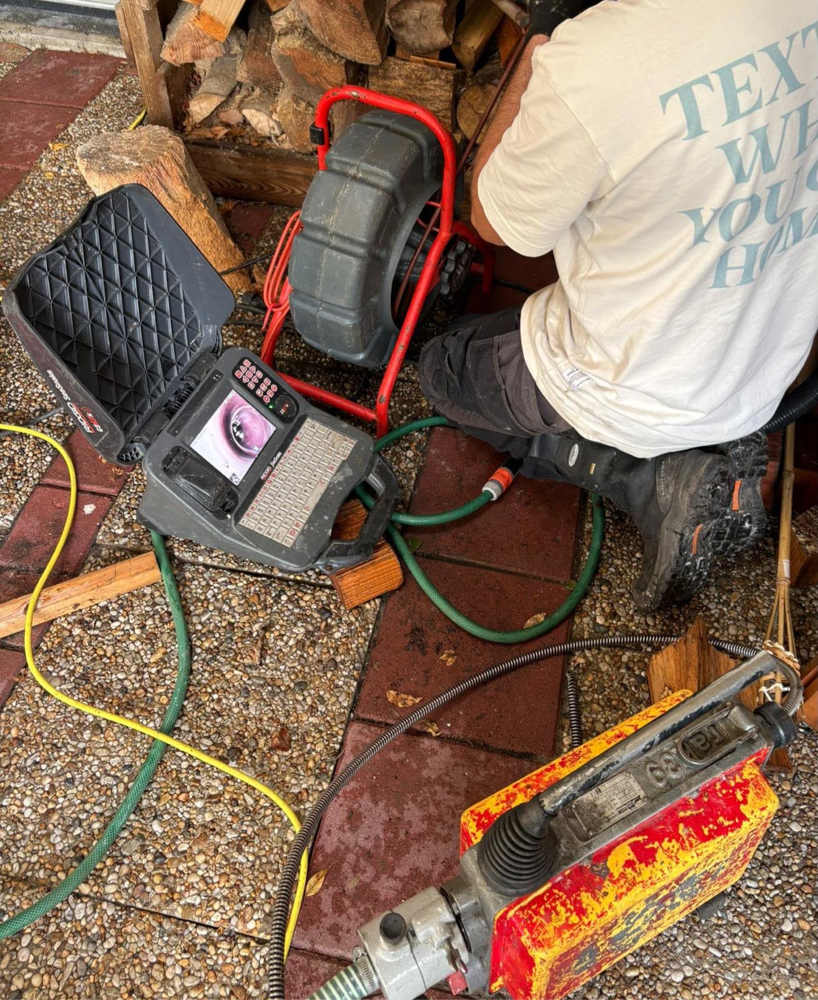
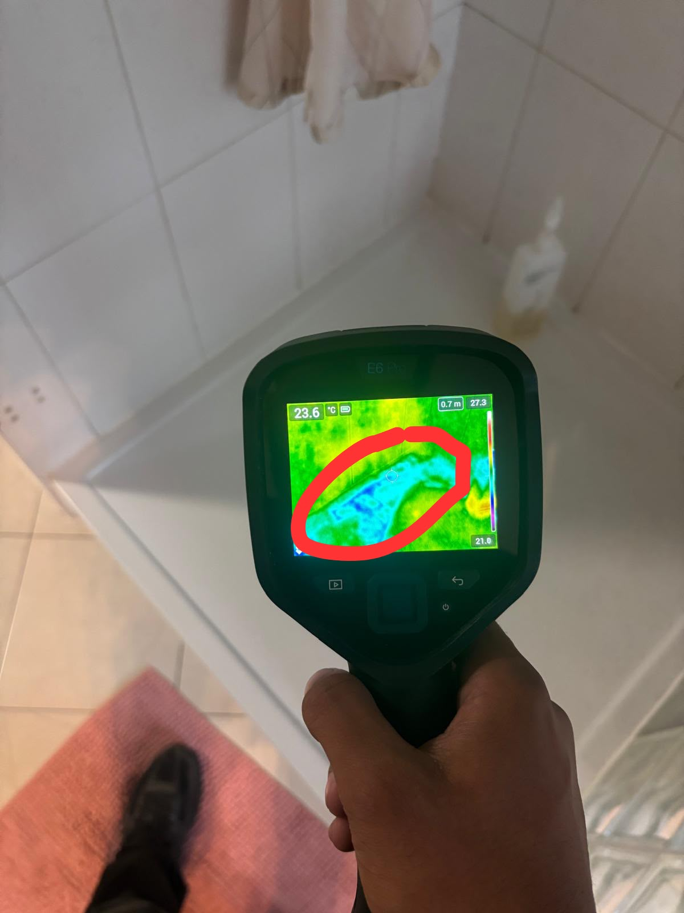
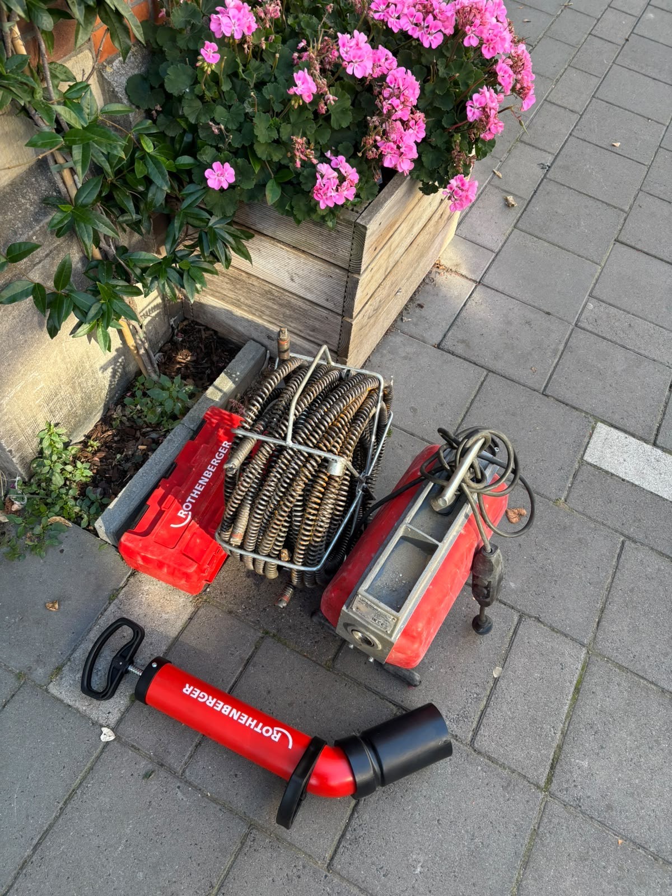
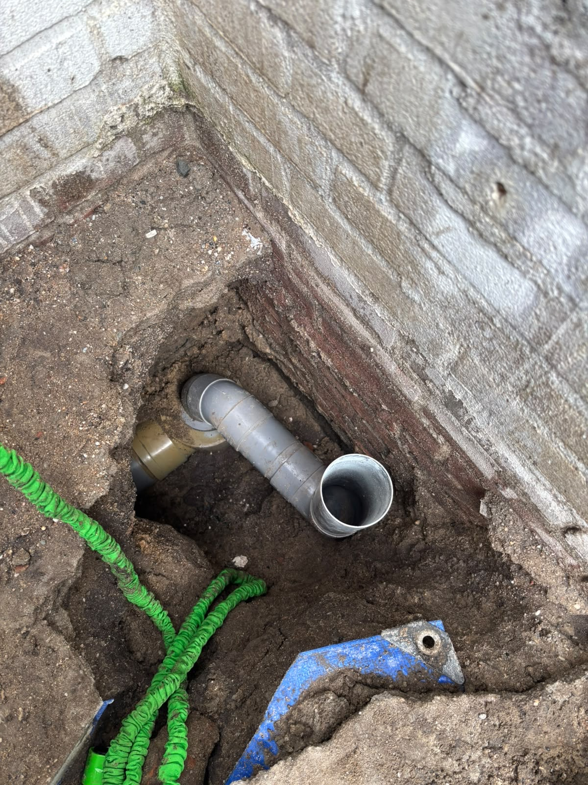

Sanitair
Kranen, toiletten, wastafels en douches: we plaatsen nieuw sanitair en vervangen wat aan vervanging toe is. Met aandacht voor de aansluitingen achter de muur en een nette afwerking.
Bel Loodgieter Dijkstra. We nemen dag en nacht op, ook in het weekend, en zoeken uit waar het probleem echt zit.
Bel direct, 24 uur per dag 085 200 9967Liever mailen? info@loodgieterdijkstra.nl

Water zoekt zijn eigen weg, achter tegels, onder de vloer en langs leidingwerk. Daarom kijken we niet alleen waar het water zichtbaar wordt, maar zoeken we waar het echt vandaan komt. Zo blijft het niet bij dichtplakken en krijgt u een gerichte reparatie.
We herstellen lekkende waterleidingen en koppelingen, lekkages bij toilet, badkamer, wastafel en gootsteen, de afvoer en waterverlies bij radiatoren of de cv-ketel.

Water dat blijft staan, een borrelende afvoer of een toilet dat niet doorspoelt. We maken de leiding vrij en kijken bij een terugkerende verstopping verder: verkeerd afschot, een verzakking of een beschadigde buis los je niet op met alleen ontstoppen.


Links: het materiaal waarmee we een leiding vrijmaken. Rechts: een opengelegde afvoer bij een woning.

Kranen, toiletten, wastafels en douches: we plaatsen nieuw sanitair en vervangen wat aan vervanging toe is. Met aandacht voor de aansluitingen achter de muur en een nette afwerking.
Wisselende watertemperatuur, een ketel die steeds bijgevuld moet worden of een verwarming die niet warm wordt. Niet elke storing betekent een nieuwe ketel: soms is het een expansievat, een lekkende koppeling of lucht in het systeem.
Twijfelt u of repareren nog zin heeft? We kijken naar de staat van de installatie en geven eerlijk advies.
U vertelt wat er aan de hand is, wij denken mee over de mogelijkheden.
We plannen een moment dat u uitkomt. Bij spoed zo snel mogelijk.
Op locatie bekijken we de installatie, zoeken de oorzaak en voeren het werk uit.
We testen aansluitingen en werking voordat we de klus afronden.
“ik ben superblij met dit supertoffe team! het lijkt een familie en vond ze heel vriendelijk! aanrader!!”
Bellen is het snelst. We zijn elke dag 24 uur bereikbaar.
Bel 085 200 9967